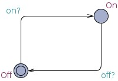
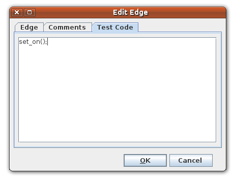
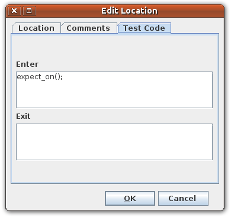
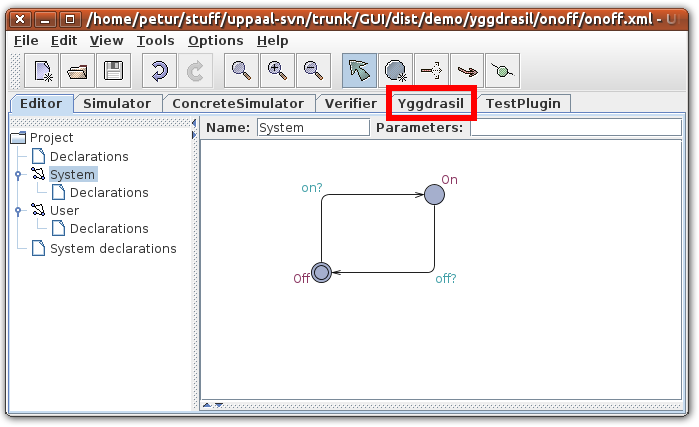
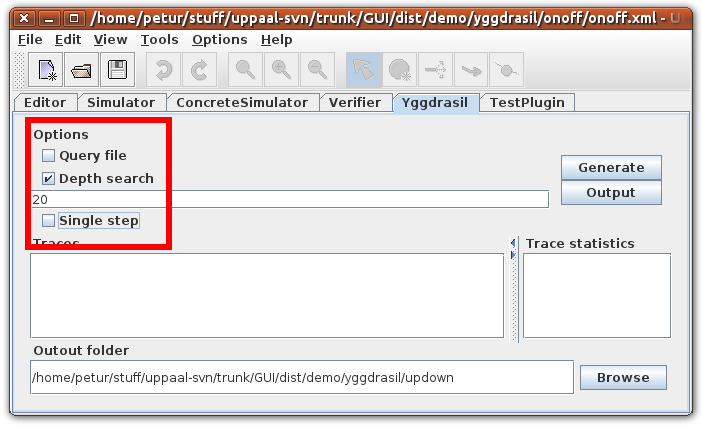
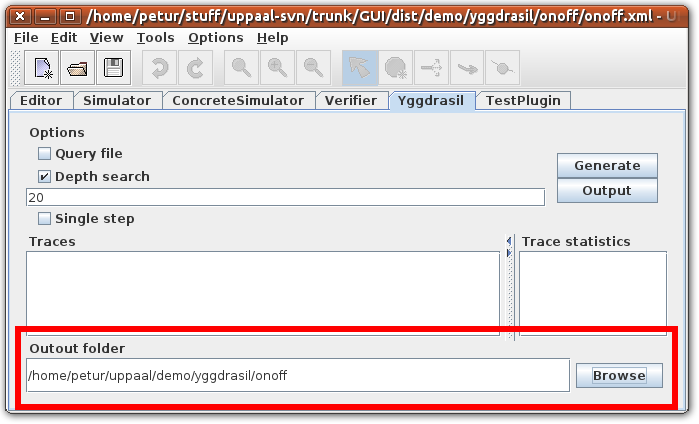
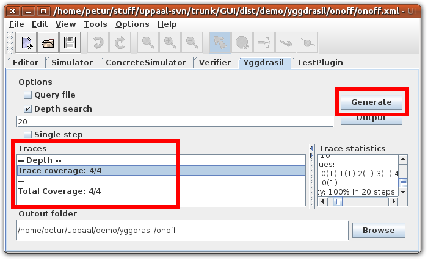
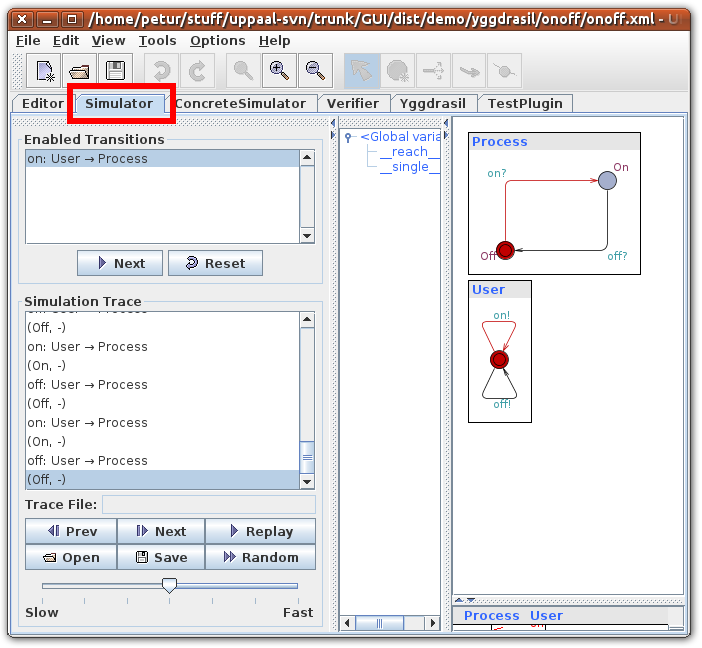

This tutorial explains the off-line test-case generation feature of Uppaal.
An explanation of Test Case generation is available in the help menu within Uppaal. Go to Help Menu -> Help ... and browse to UPPAAL Help -> GUI Reference -> Test Cases.
For comments or questions please contact Petur Olsen at petur@cs.aau.dk or Marius Mikucionis marius@cs.aau.dk.
The features are explained in terms of two example systems. An On/Off system and an Up/Down counter. The systems are modeled in abstract terms, but could, respectively, represent a lamp with on/off capabilities and a dimmer lamp, which can be turned up or down.
Both examples include a model, decorated with test-code, a correct implementation of the system, and a mutant with an implementation error. The system and mutant are implemented in Java so they should be platform independent. Execution scripts are included for Windows and Linux.
Open the onoff.xml file in Uppaal.
The system contains two templates: System and User.
The system can be either On or Off, with channels on and off changing between them.

The user can non-deterministically press on or off.
There are some Test Case generation specific details in this model. First, there are two global variables declared:
int __reach__ = 0; int __single__ = 0;These are required for test case generation to use depth-first reachability and single step techniques for test-case generation. These variables must not be altered in the model.
Second, there are two blocks of comments in the System declarations. A multi-line comment starting with TEST_PREFIX or TEST_POSTFIX is treated as prefix or postfix code for each test case.
In this example each test case is a Java class with a main method, executing this Java class constitutes running the test case. Therefore the prefix and postfix code is wrapper code for this Java class.
/** TEST_PREFIX
package app;
import app.App;
class Test extends App {
public static void main(String[] args) {
*/
/** TEST_POSTFIX
}
}
*/
The test case class extends the App class we are testing. Each step in the test case will execute some methods on this class.
The system model is decorated with test code. Double clicking the edge labeled on? and selecting the Test Code tab reveals an area for entering test code. In this model the test code should be set_on();. This will execute the method set_on() on the application whenever this edge is taken in a test case. Similarly set_off(); is added to the edge labeled off?.

For states test code can be entered in two areas, Enter and Exit. This test code is added to the test case when the trace reaches the state or leaves it, respectively.

To generate test cases go to the Test Cases tab.

Select which techniques for test case generation to use. The different techniques are explained in the Uppaal Help Menu. For now only select Depth search and a depth of 20.

Select the output folder for test cases. Make this point to the onoff folder in this tutorial.

Pressing Generate should generate a single trace. Each trace generated will have a line in the list similar to Trace coverage: 4/4. This shows that the trace covered four out of four edges.

By double clicking the trace and selecting the Simulator tab, the trace can be examined. Unsurprisingly the trace simply runs in circles with alternating on/off presses.

Pressing the Output button in the Test Cases tab will generate a file called testcase0.code in the selected output folder. If several traces have been generated, several files will be generated with sequential numbering.
Each of these will be a Java class with the sequence of method invocations induce by the generated trace. A snippet is shown below.
1: package app;
2: import app.App;
3:
4: class Test extends App {
5:
6: public static void main(String[] args) {
7:
8: expect_off();
9:
10: set_on();
11:
12: expect_on();
13:
14: set_off();
15:
<... snip ... >
93:
94: }
95: }
The test case starts with the prefix code on lines 1-6.
Line 8 is the first step of the trace. This is expect_off(); since the initial location is Off.
The first transition is the one labeled on?, the test code for this transition is set_on();. This is entered in the trace at line 10.
The trace then enters location On and expect_on(); is in the test case at line 12. The test case continues in this fashion.
The trace ends with the postfix code on lines 94-95.
Running the test.sh (or test.bat on Windows) will compile and run the test cases one at a time.
It will output the name of each file as it executes them.
No output from the test case signifies successful execution.
onoff$ ./test.sh testcase0.code onoff$
Running the testiMutant.sh (or testMutant.bat on Windows) will compile and run the test cases on the mutant implementation.
This should result in an exception being thrown, signifying a test error.
onoff$ ./testMutant.sh testcase0.code Exception in thread "main" java.lang.AssertionError at app.App.expect_on(App.java:17) at app.Test.main(Test.java:15) onoff$
The implementation can be examined in the onoff/app folder. See AppC.java for the correct implementation and AppM.java for the mutant.
In order to transfer this to you own applications, you will have to decorate the model with test code such that the output from Test Cases constitutes an executable test case in whatever test execution framework you use.
Continue to part two of this tutorial for explanation of how values of parameters can be used in test cases.